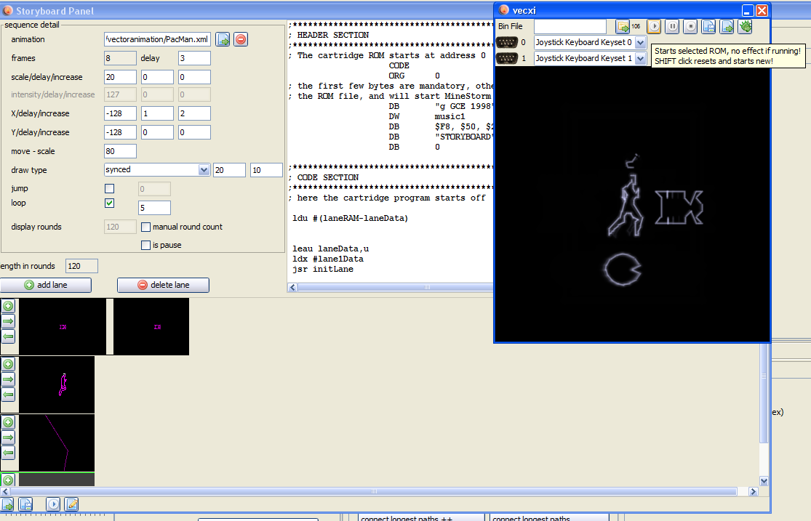

Storyboard" in vecci (located at the lower right - in the animation section).
Storyboard" in vecci (located at the lower right - in the animation section).The storyboard can be accessed by pressing the button " Storyboard" in vecci (located at the lower right - in the animation section).
With the storyboard you can generate vectrex source code and binary that displays a set of animations.
Each such animation can be placed, sized, moved, removed and illuminated in user defined sequences.
With some "energy" one might tell "stories" consisting of different animation (sequences).

The storyboard
In general
each storyboard consists of so called "lanes". Each lane will be played back in parallel to all other lanes. You can add as many lanes as you like.
Each lane consists of so called sequences. The sequences in one lane are played sequentially.
Each sequence contains one animation or a pause.
So overall you can create a storyboard which consists of animations which can be played in sequence or parallel.
The complete storyboard repeats after it is finshed playing. If a single lane is finished "befor" other lanes are finished it will also start from the beginning. Thus lanes can get "out of sync" (to synchronize lanes you can add pauses).
Vocabulary
(refresh-)round
Vectrex programs are realized in what can be called "game loops". One such "loop" is what I like to refer to as a round (refresh round). Optimally one round takes 1/50 of a second. So 50 rounds take one second. If that is the case the vectrex screen is refreshed 50 times a second = 50Hz display, which is nice and stable.
(animation-)frame
If talking about animations a frame of an animation is "one" step or one "image" of such an animation.
(animation-)delay
A number of refresh rounds to wait before something is changed.
animation delay: rounds to wait before the frame of an animation is changed
scale delay: rounds to wait before the scale is changed
intensity delay: rounds to wait before the intensity is changed
X/Y delay: rounds to wait before the X/Y (position) is changed
scale
Vectrex internally that is timer T1 (low). For convenience sake let us say it is one of two factors that defines the size of an animation.
A little bit more in depths explanation. All drawing or positioning the vectrex does is done using two components:
scale and
strength
The strength is inherently defined by the vectorlist (of the animation) and once compiled can not be (easily) changed. The scale is "just" a drawing parameter and can easily be changed while a vectrex programm is running. To get a better understanding...
Think of it like you sit in a car. The speed of the car is the "strength" and the time you sit in the car is the scale.
To move 10 kilometers you have (in this example) two options:
move with the speed of 1 km/h for 10 hours
move with the speed of 10 km/h for 1 hour
Since you are in a hurry - you will always chose option 2!
Vectrex is always in a hurry! If at all possible use the smallest scale (time) possible (to achieve the above mentioned 50Hz).
To stay with the example above:
imagine you are driving on really large parking place (like 10x10 kilometers)
imagine it is deep in the night
imagine there is a spectator in an airplane 10 kilometers above
imagine you have a powerfull light on the roof of your car
imagine you drive from the middle of the parking spot 1km to the west with the light switched on
The spectator just saw a gigantic vectrex, drawing a vector really slow!
imagine you switch the light off
imagine you drive 500m to the north
The spectator just saw nothing, but he will realize soon that the gigantic vectrex, moved the vector beam to another location
image you switch the light on
imagine you drive 1km to the east
The spectator saw the vectrex drawing another vector, resulting in an "=" sign!
... and so on.
Located somewhere in the left in the middle of the screen:
" add lane"
add lane"
adds a lane. If there are more than one lane - there will be a "selected" lane (= active lane). The selected lane has a bright green border, not selected lanes have a black border.
" delete lane"
delete lane"
deletes the current active lane (and all its sequences).
Located somewhere in the left at the bottom of the screen:
 load a storyboard
load a storyboard
 save storyboard
save storyboard
 compile and run storyboard
compile and run storyboard
 open vide with generated sources
open vide with generated sources
Once a lane is added, each lane has three buttons:
add a sequence
 move selected sequence right
move selected sequence right
 move selected sequence left
move selected sequence left
All sequences have a black background. A selected sequence has a dark gray backround. The selected sequences details can be edited at in the panel at the top of the screen labeled "sequence details".
Located somewhere in the middle at the top of the screen, in an area labeled "sequence detail":
load a animation
delete current sequence
animation
here you can select the animation this sequence should display
unless you want to build a "pause-sequence", you always must select an animation.
frame
this shows of how many frames the selected animation consists of
delay
a value you can provide how "fast" the animation changes its frames (see above definition of delay)
scale/delay/increase
"scale": the first value gives the (initial) size of the animation
"delay": if the size is stable (should not change) leave this value at 0,
otherwise define a delay, at which speed the scale should change
"increase": if a delay other than 0 was set, this value will be added to the initial scale each "delay" countdown.
"scale" is an 8bit unsigned value, "delay" and "increase" are 8bit signed values
intensity/delay/increase
Only available if the draw type is not "synced extended"
"intensity": the first value gives the (initial) brightness of the animation (0-127, values between 128-255 do not have an intensity)
"delay": if the intensity is stable (should not change) leave this value at 0,
otherwise define a delay, at which speed the intensity should change
"increase": if a delay other than 0 was set, this value will be added to the initial intensity each "delay" countdown.
"intensity" is an 8bit unsigned value, "delay" and "increase" are 8bit signed values
X/Y/delay/increase
Y respectively...
"X": the first value gives the (initial) X-position of the animation (-128 - +127)
"delay": if the X-position is stable (should not change) leave this value at 0,
otherwise define a delay, at which speed the X-position should change
"increase": if a delay other than 0 was set, this value will be added to the initial X-position each "delay" countdown.
"X" is an 8bit signed value, "delay" and "increase" are 8bit signed values
move - scale
The scale of the positioning. Since it is possible to draw small objects (small draw scale) at the edge of the screen (large move scale), it is necessary to define two different scale values - this is the one for moving, and can not be changed over time. The same effect as changing "this" value over time can be achieved by changing the position (although theoretically this is the worse version).
draw type
At the moment only two draw types are supported:
synced
should be used with "normal" animations
synced extended
should be used with animations, that support vectors with different intensities within the animation
for both lists two additional parameters can be given:
resync max
(see description in vecci-export documentation)
factor for list
Using the "metaphor" above with this value you can change the speed of the car. Meaning you can change the strength of the vectorlist. Each coordinate within the vectorlist is multiplied with this factor.
The factor must be chosen that after the multiplication each vector coordinates absolut value is smaller than 127 (otherwise the vectorlist/animation will not be displayed correctly). You can check the source generated in the neighboring large textarea.
jump
To prevent jumping to the beginning or to the next sequence, you can check the "jump" checkbox and enter the number of the sequence you want to jump to. (number only from this lane, zero based)
loop
If you want this sequence to loop - check this checkbox and provide a number of loops (0 = endless).
display rounds
The textfield contains the number of "rounds" this sequence plays. Usually it is calculated from the values given above. The calculation is done using the formular:
display rounds = frames*delay*loopcount
If "manual round count" is checked, you can enter a value manually thus overwriting the calculated value. The animation sequence than will play for exactly that number of rounds (looping).
is pause:
If selected, there one need not provide a draw type or an animation. This sequence will wait for the number of rounds provided by "display rounds" (which must be entered manually). Nothing will be displayed while pausing.